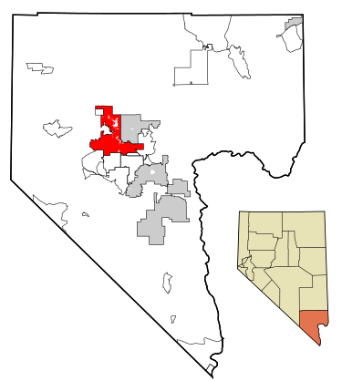
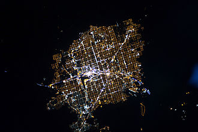
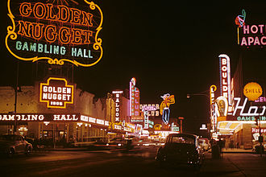
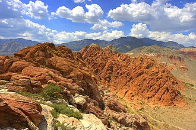

Las Vegas,officially the City of Las Vegas and often known as simply Vegas, is a city in the United States, the most populous city in the
state of Nevada, the county seat of Clark County, and the city proper of the Las Vegas Valley.
Las Vegas is an internationally renowned major resort city known primarily for gambling, shopping, fine dining and nightlife.
|
 |
The city bills itself as The Entertainment Capital of the World, and is famous for its mega casinos, hotels and associated entertainment.
A growing retirement and family city, Las Vegas is the 30th-most populous city in the United States, with a population of 603,488 at the
2013 United States Census Estimates.
The 2013 population of the Las Vegas metropolitan area was 2,027,828.
|
 |
Established in 1905, Las Vegas was incorporated as a city in 1911.
At the close of the 20th century, Las Vegas was the most populous American city founded in that century (a similar distinction retained
by Chicago in the 19th century).
The city's tolerance for numerous forms of adult entertainment earned it the title of Sin City, and has made Las Vegas a popular setting
for films, television programs, and music videos.
|
 |
Las Vegas is generally used to describe not just the city itself, but areas beyond the city limits, especially the resort areas on and near the Las Vegas Strips, and the Las Vegas Valley.
The 4.2 mi (6.8 km) stretch of South Las Vegas Boulevard known as the Las Vegas Strip is in the unincorporated communities of Paradise, Winchester, and Enterprise, located in Clark County.
|

|